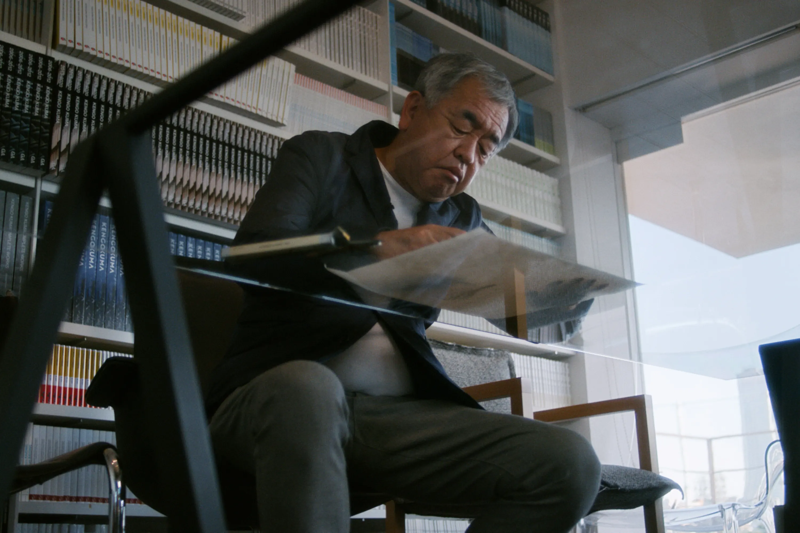
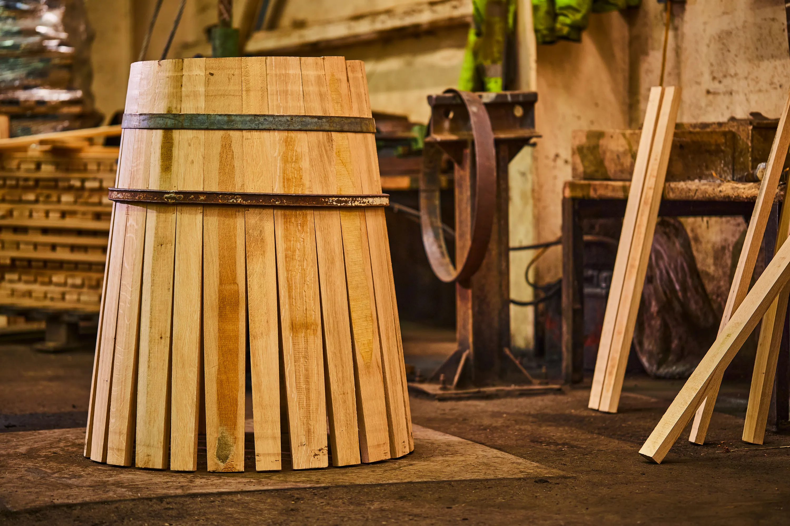
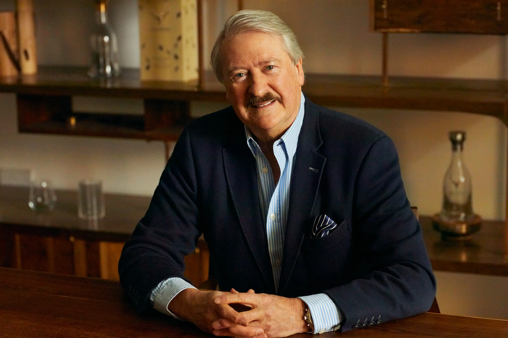
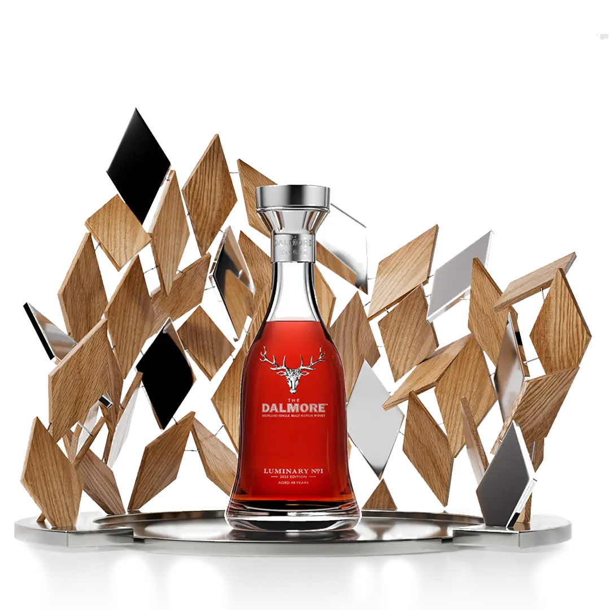

大摩築光大師系列No.1 珍稀48年單一麥芽蘇格蘭威士忌
世界首創！大摩攜手建築大師隈研吾再創高峰
全球窖藏最稀有威士忌的「老酒銀行」大摩酒廠，近年來與蘇格蘭第一座設計博物館V&A Dundee合作密切，促成當代建築大師與威士忌大師的協作，並於2022年上市全新酒款系列，「大摩築光大師系列」。「築光」之名來自大摩首席釀酒師理查・派特森與卓越創作者的攜手合作，致敬那些以追求卓越而發出光芒，並激勵大眾釋放潛力的各界傑出人物。「大摩築光大師系列」預計三年推出三版，2022年首發版本「大摩築光大師系列 No.1」，包含兩個珍稀酒款，其中「大摩築光大師系列 No.1 珍稀48年單一麥芽威士忌」將於2022年11月登上拍賣會，部分收益將捐贈給V&A Dundee設計博物館。而另一個珍稀酒款，「大摩築光大師系列 No. 1 _ 2022限定版_單一麥芽蘇格蘭威士忌」預計11月初於台灣上市。

隈研吾是2021年《時代》百大人物中唯一入選的建築師，理查・派特森（Richard Paterson OBE）則以對威士忌的貢獻深遠獲得 OBE 榮譽，同年，隈研吾與理查・派特森一起攜手演出V&A Dundee製作的紀錄短片，縮時幾十年來的大師之路。2022年，兩位大師再度合作創造「大摩築光大師系列 No.1」，以令人嘆為觀止的藝術雕塑結合，講述富有遠見的創作者追求卓越工藝的故事。「大摩築光大師系列 No.1 珍稀48年單一麥芽威士忌」，典藏釀酒大師理查・派特森手工培育 48 年的珍貴佳釀，這支頂級威士忌在蘇格蘭橡木桶 (Tay Oak) 和日本水楢桶中陳釀，建築大師隈研吾以48片蘇格蘭橡木和日本橡木與拋光金屬片雕塑尊貴酒座，從設計到內涵盡呼應大摩如建築藝術的繁複華麗風味。
築「木」之光，讓建築藝術登上威士忌拍賣場
隈研吾的招牌標誌，就是大量使用天然材料，尤其是木材，同時體現他在V&A Dundee設計博物館的建築中；理查・派特森在半世紀的釀酒經歷中，擅長以當地風土和木材元素展現威士忌釀造的微妙風味。隈研吾與理查・派特森在設計和威士忌之間建立了一種詩意連結—突出且互補的材料，從在地力量和自然環境中汲取靈感，紀念促成該項目的 V&A Dundee設計博物館。

「我與大摩和蘇格蘭的關係，源自對天然材料的共同熱愛，我印象很深刻的是，理查・派特森這樣的大師對環境謙卑且尊重，我的作品回應了這份感性。」隈研吾打造尊貴的酒座以48片蘇格蘭橡木、日本橡木和拋光金屬片雕塑如鑽石閃閃發光，選用的蘇格蘭橡樹 (Tay Oak) 自然傾倒在泰河 (River Tay) 岸邊，啟發大摩和V&A Dundee的創作靈感，以無形的自然力量激發有形的事物。

理查・派特森也分享道：「很榮幸再次與隈研吾合作，從他豐富的建築經驗中汲取靈感，將這瓶全新大摩化作真實。『大摩築光大師系列 No.1 珍稀48年單一麥芽威士忌』是文化遺產的縮影，它美麗而稀有，我為此誕生感到無比自豪。」
大摩與V&A Dundee的合作夥伴關係從2021年起持續四年，旨在策劃和倡導卓越的威士忌作品來支持設計博物館，不久前香港蘇富比拍賣出極為罕見的「大摩鎏金時代6號典藏」（Decades No.6）並捐贈100,000英鎊給V&A Dundee；2022年「大摩築光大師系列 No.1 珍稀48年單一麥芽威士忌」也將在11月現身拍場，眾人引頸期待。
「大摩築光大師系列 No.1 珍稀48年單一麥芽威士忌」
「大摩築光大師系列 No.1 珍稀48年單一麥芽威士忌」全球限量三瓶，裝盛在隈研吾設計的獨特雕塑中，該雕塑以48個木片組成，運用日本橡木、蘇格蘭橡木和閃閃發光的金屬手工製作。這款威士忌在理查・派特森手中培育了48年，歷經Oloroso雪莉桶 、Apostoles雪莉桶、年份波特桶和美國白橡木桶，再注入蘇格蘭橡木桶和日本水楢桶二次熟成多年。三瓶酒連同雕塑的第一瓶將在V&A Dundee設計博物館展出，第二瓶將現身倫敦蘇富比拍賣場，部分收益捐贈給 V&A Dundee設計博物館，第三瓶將回到大摩釀酒廠的高地之家。

- 橡木桶履歷 : Oloroso雪莉桶 、Apostoles雪莉桶、年份波特桶、美國白橡木桶、蘇格蘭橡木桶(Tay Oak)、日本水楢桶
- 酒精濃度：40.8% 非冷凝過濾｜自然酒色
- 香氣：多種異國情調的風味和諧融合，黑櫻桃、烤咖啡豆、波特酒、金銀花和甜瓜。
- 口感：充滿活力的黑森林水果、楓糖漿、壓碎的Pontefract甘草甜餅和厚實巧克力蛋糕。
- 餘韻：英國德梅拉拉糖、塞維利亞橘子果醬和杏子。